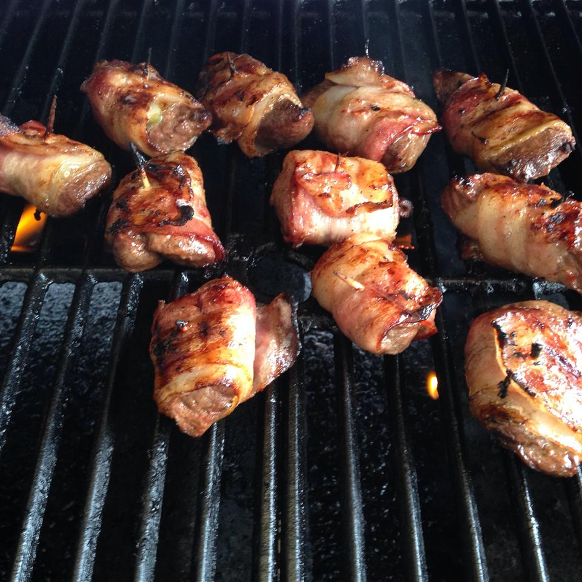

Deer Poppers

Do you like Jalepeno Poppers? What about Venison?
Well this is the perfect dish for you!
Ingredients
- 1 pound venison steaks, cubed
- ½ teaspoon Greek seasoning, or to taste
- ¼ teaspoon steak seasoning, or to taste
- 1 (16 ounce) bottle Italian salad dressing
- ½ cup jalapeno pepper slices
- 10 slices bacon, cut in half
- toothpicks, soaked in water
Cooking Instructions
- Season the venison meat with Greek seasoning and steak seasoning. Place in a bowl, and pour in enough Italian dressing to cover. Refrigerate for at least 2 hours to marinate, but preferably overnight.
- Preheat the grill for medium heat. Drain the marinade from the meat, and discard the marinade. Place a slice of jalapeno on top of a piece of meat, then wrap with a slice of bacon. Secure with a soaked toothpick. Repeat with remaining meat.
- Grill the deer poppers for 15 to 20 minutes, turning occasionally to brown the bacon. Serve and enjoy!
Return to Top
Home